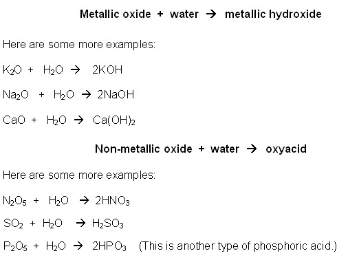

Unit 2: Chemical Reactions
Activity 3: Types of Chemical Reactions
Content
Types of Reactions
Chemical reactions exist in a variety of places: industry, home, work, even within our own bodies, but there is a common classification of these chemical reactions. The classification of a chemical reaction is a far-reaching entity. There are complicated chemical reactions that are exclusive to a particular branch of chemistry and are used in academic or industrial research. But, the fundamental chemical reactions can be divided into four categories plus the combustion of hydrocarbons:
- Combination (also known as synthesis, addition or combination)
- Decomposition
- Single Displacement
- Double Displacement
- Combustion of Hydrocarbons
Combination Reactions
Did You Know ?

|
The Canadarm2 needed a combination reaction to blast off into space. That’s right, a combination reaction with a big bang! The reaction is as follows: H2 + O2 H2O + energy |
|---|
Hydrogen and oxygen do not necessarily need to be in the liquid states. They can also react in the gaseous state to produce water. Witness the reaction’s force in the following videoclip:
|
|
Watch the clip entitled, Making Water in a Can but please be aware, that, depending on your Internet connection speed, all clips on this page may take a few minutes to download. You can always continue reading the remainder of this page while you wait. |
|---|
The video demonstrated what is known as a combination reaction. If two substances react to produce one new substance, then a combination reaction is produced.
A very straightforward combination/synthesis reaction is when a single compound is produced from its elemental components.
 The General Formula for a Combination Reaction is
The General Formula for a Combination Reaction is
A + B  AB
AB
and a specific type of a combination reaction is between an element and another element producing a compound
Element + Element  Compound
Compound
Here are some examples:
K + Cl2  2 KCl
2 KCl
6Ca + 2N2  2Ca3N2
2Ca3N2
Did You Know ?
|
|
Carbonated drinks rely on a combination reaction. When a pop can is opened, it “fizzes” as the gas is released from the carbonated drink. During the manufacture of the carbonated drink, carbon dioxide gas is forced into the water solution and then mixed together. A reaction occurs to produce a carbonic acid. The release of the pressure in the can has the opposite effect. The carbonic acid breaks apart and produces carbon dioxide gas. This leaves that “flat” taste for the drinker. |
|---|
A commonly known fact about carbon dioxide is that its solid state is known as dry ice. Watch the following videoclip showing the dry ice, CO2, being mixed in water. The indicator is there to show a change in pH levels.
|
|
Watch the video entitled, Dry Ice Acidity Change but please be aware, that, depending on your Internet connection speed, all clips on this page may take a few minutes to download. You can always continue reading the remainder of this page while you wait. |
|---|
The change in acidity level shows us that an acid is produced when water reacts with carbon dioxide. The product is carbonic acid. The reaction is
CO2 + H2O  H2CO3
H2CO3
Another combination reaction involving two compounds to produce one compound occurs between a metallic oxide and water. Watch the following video clip showing the reaction between magnesium oxide and water.
|
|
Watch the video entitled, Basic Oxide but please be aware that, depending on your Internet connection speed, all clips on this page may take a few minutes to download. You can always continue reading the remainder of this page while you wait. |
|---|
The reaction is as follows: MgO + H2O  Mg(OH)2
Mg(OH)2
 Another type of combination reaction involves two compounds reacting to produce one compound.
Another type of combination reaction involves two compounds reacting to produce one compound.
Two categories are as follows:

This is a disclaimer. External Resources will open in a new window. Not responsible for external content.
Unless otherwise indicated, all images in this Activity are from the public domain or are © clipart.com or Microsoft clipart and are used with permission.